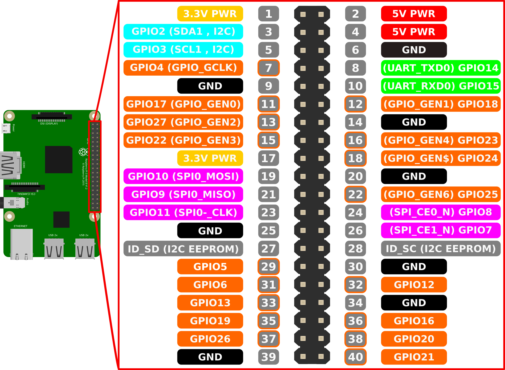

Unidad 2. Internet de las Cosas con el Sistema Embebido
Introducción.
Material requerido
- Raspberry Pi 3 Model B
- Alimentador de 5V 2500mA Micro USB
- Tarjeta microSD de 8GB Clase 10 con su adaptador SD
- Imagen del sistema operativo Raspbian Stretch Lite
- Una resistencia de 330\(\Omega\)
- Dos resistencias de 10k\(\Omega\)
- Conexión ethernet
- Circuito de encendido-apagado para la Raspberry Pi
- LED’s rojos
- Sensor de temperatura y humedad DHT22 (en última instancia funciona el DHT11)
- Un botón tipo push
- Tablilla de prototipado
- Cables tipo jumper
Preparación
Mediante Etcher instalamos el sistema operativo en la tarjeta SD (Raspbian Stretch Lite). Al ser la versión más ligera -solo ocupa \(\approx\) 350MB-, no tiene entorno gráfico, por lo cual podemos prescindir del monitor.
Conexión SSH headless
Trataremos de conectarnos a la Raspberry por medio de SSH, sin un monitor de por medio. Debemos habilitar la conexión antes incluso de encender la placa. Para ello nos dirigimos a la tarjeta SD insertada en nuestra computadora -la que utilizamos para instalarle Raspbian-, y entramos a la partición boot de la misma SD (podemos reconocerla porque es la más pequeña). Allí creamos un archivo de texto plano vacío y sin extensión, llamado ssh. La Raspberry, al arrancar, siempre busca dicho archivo. Al encontrarlo, activa por sí misma la conexión SSH.

Aquí vemos el archivo plano y sin contenido llamado ssh en la partición boot. Puede contener texto, pero no es necesario. Como paso adicional, podemos habilitar la conexión wifi de manera automática. Para ello, creamos otro archivo de texto plano que contenga la información de nuestra red:

Deben respetarse las comillas en el caso del nombre de nuestra red y la contraseña. Guardamos el archivo como wpa_supplicant.conf en la misma partición boot y podemos ya insertar la tarjeta SD en nuestra Raspberry.

Lo ideal es utilizar conexión cableada, para disminuir el riesgo de una desconexión. Podemos encender la Raspberry con solo el cable Ethernet y la alimentación habilitados. Esperamos alrededor de un minuto para la primera vez (en esencia, la placa está lista cuando ya no hay parpadeo de color verde en los led’s de la misma). Podemos entonces buscar la dirección de la raspi, utilizando el método que se desee. Por ejemplo, en el caso de usar nmap (https://nmap.org/download.html) basta con escribir nmap -sn 192.168.0.0/24 para que haga un barrido rápido de todos los dispositivos conectados a la red 192.168.0.1. Debe detectar la raspi con el nombre que le hayamos dejado (por defecto, raspberry). En nuestro ejemplo, la raspi tiene la dirección 192.168.0.9:

Para conectarnos vía SSH a la raspi mediante Windows o algún dispositivo móvil, necesitaremos una aplicación de terceros para lograrlo, pues en el caso de Linux o MacOS ya se encuentra habilitado por defecto. Para Windows se sugiere PuTTY, cuya descarga se encuentra en la dirección: http://www.chiark.greenend.org.uk/~sgtatham/putty/download.html. Si se utiliza esta aplicación -la cual es sumamente sencilla de usar-, al ejecutarla hay que asegurarse de que esté seleccionado SSH, en la caja de texto HostName debe escribirse la dirección IP ya localizada de la raspi y dar clic en Open. Enseguida debería aparecer un mensaje de advertencia referente a la seguridad del dispositivo: podemos ignorarla felizmente, aparece solo la primera vez al no conocer la placa, ya que nunca se había conectado a la misma. Posteriormente nos pedirá las credenciales de la Raspberry: pi como usuario y raspberry como contraseña si es que no se han modificado. Abrirá entonces una consola idéntica a la de Raspbian. Ya estamos conectados a la raspi.
Si por lo contrario, nos conectaremos con Linux o con MacOS, basta con abrir una terminal y escribir:
ssh pi@192.168.0.9(recordemos que 192.168.0.9 es la dirección IP de nuestra placa). Nos lanzará una advertencia a la cual le respondemos «yes» y escribimos la contraseña cuando la pida (raspberry si no la hemos modificado). Ya estamos conectados.

Algunos ajustes adicionales
Actualizar el sistema
Lo primero que deberíamos hacer es actualizar nuestro sistema operativo, primero actualizar repositorios:
sudo apt updateEnseguida actualizar paquetes:
sudo apt upgradeOptimizaciones
Ahora deberíamos configurar algunas cosas en Raspbian: la localización, la expansión del sistema de archivos y optimizar la memoria RAM. Esto lo haremos con el comando
sudo raspi-configSi no hemos configurado la conexión WiFi aún, es buen momento. Entramos en raspi-config \(\rightarrow\) Network Options \(\rightarrow\) N2 Wi-fi y allí nos pedirá que escribamos el nombre de red y la contraseña pertinentes.
Asignar una IP fija
Trabajemos con conexión Wi-Fi a partir de ahora. Será bastante conveniente que no tengamos que estar barriendo nuestra red en busca de la dirección IP de nuestra raspi cada que tengamos que acceder a ella por SSH. Para ello, entramos a la misma después de, precisamente, haber encontrado su dirección actual.
ssh pi@192.168.0.12Si tenemos más de una raspi o simplemente porque deseamos cambiarle el nombre, podemos hacerlo por medio del menú de inicio \(\rightarrow\) raspi-config \(\rightarrow\) Network Options \(\rightarrow\) N1 Hostname. Aceptamos el mensaje y al dar Enter podremos escribir el nuevo nombre con el que aparecerá la placa en la red.
Dentro de la raspi, ejecutamos
ifconfigNos aparecen las diferentes interfaces de conexión con las que cuenta la placa. Nos interesa la última: wlan0, de la cual nos quedaremos con el dato correspondiente a inet.
Aunque se asume que al entrar por
SSH, se conoce la dirección IP de la raspi, el anterior comando nos permite saber la misma desde la propia placa, por si en algún momento entramos en forma gráfica o por medio de monitor.
Ahora abriremos un archivo de configuración mediante nano:
sudo nano /etc/dhcpcd.confNos vamos hasta el final del archivo y escribimos lo siguiente:
interface wlan0
static ip_address=192.168.0.12/24 static routers=192.168.2.1 static domain_name_servers=192.168.0.1
Guardamos los cambios con <ctrl>+o y cerramos nano con <ctrl>+x. Reiniciamos la raspi y debería conectarse con la misma dirección.
Habilitar el acceso como root
Es probable que queramos habilitar el acceso como usuario root a la raspi. Para ello accedemos como administrador al archivo de configuración del demonio de SSH:
sudo su
nano /etc/ssh/sshd_configDentro del archivo buscamos la línea que diga #PermitRootLogin prohibit-password y la descomentamos (es decir, borramos la almohadilla), y sustituimos la frase prohibit-password por yes. O sea, pasamos de esto:

A esto:

Guardamos el archivo (Ctrl + O y enseguida yes) y toca reiniciar el servicio con la siguiente línea:
/etc/init.d/ssh restartEl siguiente paso es asignar la contraseña para el usuario root:
passwd rootEl sistema nos solicitará que escribamos la contraseña dos veces. Es muy importante no olvidarla. Probemos el acceso. Escribimos exit para salir del modo súper usuario y de nuevo exit para salir de la conexión SSH. Enseguida accederemos con:
ssh root@192.168.0.9Crear un respaldo de nuestro sistema
MacOS y Linux
Si queremos reiniciar la placa debemos escribir:
sudo rebootY para apagar la raspi es suficiente con escribir:
sudo shutdown -h nowEn nuestro caso, la apagaremos para poder extraer la tarjeta SD. Después de escribir el comando anterior, esperaremos a que no haya ningún parpadeo verde en los LED’s de la raspi. Retiramos la tarjeta y la insertamos en la computadora donde crearemos el respaldo. El método no difiere mucho en Mac o en Linux, pero sí en Windows. Para los primeros dos sistemas, necesitamos conocer el nombre de nuestra tarjeta cuando la hemos insertado. En una terminal, para Mac:
diskutil listTípicamente nos mostrará la tarjeta SD como el último disco enlistado, con dos particiones, a saber: la primera, muy pequeña ($\(45MB), con formato _Windows_FAT_32_ y etiqueta _boot_; la segunda (\)$ el tamaño de la tarjeta SD) solo se identifica como Linux.
Para Linux:
sudo fdisk -lNos mostrará la totalidad de dispositivos externos. En el caso de nuestra tarjeta, la marcará como /dev/sdb, siempre y cuando solo esté uno solo conectado. De todas maneras, la podremos identificar por sus características, similares a las enlistadas por MacOS.
Procedemos a crear la imagen de respaldo. En la terminal, indistintivamente del sistema (MacOS o Linux) escribiremos el siguiente comando:
sudo dd if=/dev/sdb of=~/raspbianlite-01.dmgEsto creará una imagen de disco del mismo tamaño que nuestra tarjeta de memoria, llamada raspbianlite-01 en nuestro directorio Home. Esperamos unos minutos, dependiendo del tamaño de la SD. Al terminar, dd nos avisará cuánto copió y el tiempo que tardó en hacerlo. Se recomienda comprimir la imagen resultante, quedando en un archivo de $$2.3GB para una tarjeta de 16GB. Como montaremos los respaldos utilizando Etcher, no hay problema con el formato, recordemos que esta aplicación puede leer archivos _*.zip_.
Windows
Para este sistema se ponen las cosas un poco más sencillas. Con la tarjeta SD insertada en la computadora en la que haremos el respaldo procedemos a descargar la aplicación Win32 Disk Imager desde https://sourceforge.net/projects/win32diskimager/ y ejecutarla. En la sección de Image File vamos a seleccionar la ruta donde guardaremos la imagen de nuestra SD. En la sección Device seleccionamos la SD y presionamos Read. Esperamos a que termine y ya tenemos nuestra imagen.
Restaurar el respaldo
El procedimiento es común para todos los sistemas. Simplemente montamos la imagen en una tarjeta SD formateada con Etcher, tal como montamos Raspbian en secciones anteriores.
Los pines GPIO’s y su control
Esquema
Son el medio de comunicación entre el mundo real y nuestra Raspberry Pi. Existen dos maneras de identificar los pines: BCM y BOARD. Por lo regular, se utiliza la primera, cuya numeración es como sigue:

Nota: en este diagrama se asume que los puertos USB de la raspi están apuntando hacia abajo, viéndola desde la parte superior. Para mayor información, la página https://es.pinout.xyz/ es muy buena fuente.
Python ex machina
Comencemos a trabajar con Python desde la terminal. Abrimos una y escribimos:
python3 #damos <Enter> y aparecerá el siguiente mensaje:
Python 3.5.3 (default, Sep 27 2018, 17:25:39)
[GCC 6.3.0 20170516] on linux
Type "help", "copyright", "credits" or "license" for more information.
>>>Cabe mencionar que >>> es conocido como el prompt de Python, apareciendo para indicar que está listo para recibir instrucciones. Por lo tanto, lo que a partir de ahora aparezca sin dicho símbolo es la salida a las órdenes que hemos dado al programa. Juguemos un poco con el software:
>>> 1+1 #capturamos una simple suma y damos <Enter>:
2
>>> 2**3 #elevamos 2 al cubo:
8
>>> resultado = 15/2 #«declaramos» una variable:
>>> resultado #traemos el valor de dicha variable
7.5
>>> print(resultado) #también podemos «imprimir» la variable
7.5
>>> otro_resultado = 17/6 #calculemos un decimal largo
>>> print(otro_resultado)
2.8333333333333335
>>> round(otro_resultado) #redondeamos al entero más próximo
3
>>> round(otro_resultado,1) #redondear a un decimal
2.8
>>> round(otro_resultado,2) #ahora a dos decimales
2.83
>>> str = 'Python' #creamos una variable con caracteres
>>> print(str) #y la imprimimos
Python
>>> print(str + '3' + ' ' + 'por defecto') #imprimimos una cadena concatenada
Python3 por defecto
>>> print(str + '3' + ' ' + 'es igual a ' + str * 3) #podemos «multiplicar» los caracteres
Python3 es igual a PythonPythonPython
>>> str[3] #mostremos solo el tercer caracter de la cadena'h'Definamos una función
A continuación crearemos una muy sencilla función en Python que hará exactamente lo mismo que cuando multiplicamos la cadena de caracteres. Primero debemos definir dicha función, es decir, darle un nombre. Para ello escribimos la palabra reservada def y enseguida el nombre que le pondremos a la operación, abrimos paréntesis y dentro de ellos escribiremos el parámetro con el que trabajará la función. En la siguiente línea definiremos el funcionamiento: nuestra función multiplicará por tres la cadena de caracteres e imprimirá el resultado. Cabe mencionar que Python o bien, presionar una sola vez la tecla tab no utiliza llaves o algún otro símbolo para anidar. Más bien, para definir qué es lo que forma parte de la función es la identación. En la terminal basta con dar tres espacios vacíos antes de comenzar a escribir la siguiente línea. También es de notar que cuando Python sabe que falta código para definir algo, no muestra el prompt sino, más bien, tres puntos suspensivos. Con esto da a entender que espera aún más código.
Posteriormente la ejecutamos:
>>> def mult_str(strn): #primero su nombre y enseguida el parámetro
... print(3 * strn) #operación a realizar
... #espacio vacío, ya terminamos
>>> mult_str('Hola ') #ejecutamos la función
Hola Hola Hola #y muestra el resultadoDefinamos una función un poco más compleja. Queremos que tome del usuario la cadena de caracteres que desee (parámetro strn), y la multiplique por un número que también se especifique (n).
>>> def mult_str(strn,n):
... print(n * strn)
...
>>> mult_str('Hallo ', 4)
Hallo Hallo Hallo Hallo
>>> mult_str('Hola ', 10)
Hola Hola Hola Hola Hola Hola Hola Hola Hola Hola
>>>Podemos salir del entorno interactivo de Python con el comando
>>> quit()Escribamos un programa
Para poder crear nuestras aplicaciones, es recomendable utilizar scripts, esto es, archivos de texto que mandaremos ejecutar. La ventaja es que no necesitamos estar tecleando los comandos en tiempo real. Para este caso, utilizaremos un veterano editor de textos: Vim. Vim no se encuentra instalado en su edición completa por defecto en Raspbian Lite, así que actualizamos repositorios, esperamos; actualizamos el sistema, esperamos; y enseguida lo instalamos:
sudo apt update #esperamos a que termine
sudo apt upgrade #esperamos más
sudo apt install vim #y volvemos a esperarEs momento de escribir nuestro primer programa. Crearemos con Vim un archivo con extensión _*.py_ (para que Python pueda ejecutarlo). Así que por medio de SSH procedemos a trabajar en la Raspi:
vim ejemplo.pyY aparecerá una pantalla muy espartana, vacía. A modo de tutorial exprés de Vim, cabe decirse que el editor de textos tiene dos modos: modo de edición y modo de navegación. Por defecto no está en modo edición, para entrar en él presionamos la tecla <i> y veremos que en la parte inferior pone: -- INSERT --. Estamos en modo de edición. Escribimos el siguiente texto, cuidando identaciones y cambio de líneas.
def mult_str(strn, n):
print(n * strn)
mult_str('Hola ', 3)Cuando hayamos terminado, presionaremos una sola vez la tecla <ESC> para salir de la edición y enseguida presionaremos <:w>, es decir, <shift> + . y enseguida <w>. Con eso guardaremos los cambios. Luego podemos escribir <:q> para salir de Vim.
Ahora toca ejecutar el archivo. Un comando bastante útil para enlistar todos los ficheros y archivos que se encuentran en un directorio determinado es ls. Podemos complementarlo para que muestre también los archivos ocultos mediante ls -al.
Ejecutamos escribiendo el nombre de la aplicación que abrirá el archivo y enseguida el nombre del propio archivo:
python3 ejemplo.py
Démosle mayor flexibilidad a nuestro pequeño programa. Hagamos una copia del original ejemplo.py mediante el comando cp y modifiquémosla:
cp ejemplo.py ejemplo2.pyComprobemos que se haya creado la copia:
Ahora toca editar el anterior archivo de texto:
vim ejemplo2.pySe abrirá Vim y presionamos <i> para poder editar. Necesitamos obtener interacción con el usuario, por medio del sistema operativo. Por lo tanto, debemos importar un módulo que nos lo permita. Para el caso de Python, será sys. Para importar un módulo o librería, debe escribirse al principio del programa import sys, y en el cuerpo de la función incluir el código necesario para obtener la interacción. En nuestro caso, solicitaremos dos datos al usuario: el primero será una cadena de caracteres y el segundo tiene que ser un número. Por esa razón, deberemos convertir un caracter a entero, mediante int. En nuestro código, pediremos los datos por medio de la función sys.argv[a], donde a se refiere al número de entrada. Es decir, como pediremos dos datos, deberemos repetir la función, diferenciándolas con el número en el corchete, siendo el [1] el primer argumento y el [2] el segundo valor que deberemos introducir. El código quedaría así:
import sys
def mult_str(strn, n):
print(n * strn)
mult_str(sys.argv[1], int(sys.argv[2]))Guardamos y salimos de Vim, para ejecutar en la terminal:
python3 ejemplo2.py `Hola ` 6Notemos pues que el primer valor sí es una cadena de caracteres mientras que, el segundo dato sí debe ser un número. Notemos también que en el código convertimos el caracter 6 en un número entero.

Podemos visualizar el contenido de un archivo de texto por medio de cat:
Armemos el circuito
El circuito es relativamente sencillo. A continuación se muestra el diagrama elaborado con Fritzing. En el diagrama se muestra la conexión del led, el botón, el sensor DHT22 y sus respectivas resistencias.
Generalmente se utilizan conexiones o cables de color rojo para la alimentación, que en este caso es de 3.3V; los cables de color negro son para conectar a tierra y los demás colores quedan reservados para las señales de entrada o salida de la raspi. Cabe mencionar que voltaje y tierra se conectan a los rieles laterales de la tablilla de prototipado, para de allí llevarlos a donde fuesen necesarios.
Instalando todo lo necesario en Python
Pip es un instalador para Python, una especie de apt que nos permitirá acceder a una mayor cantidad de librerías y aplicaciones. Su instalación es muy sencilla. Abrimos una terminal y ejecutamos el siguiente comando:
sudo apt install python3-pipAl dar Enter, después de un pequeño intervalo nos pedirá autorización para continuar con la instalación. La aceptamos escribiendo una y. Toca esperar a que descargue lo necesario y proceda a instalar. Tardará unos segundos.
También necesitamos la librería RPi.GPIO. La conseguiremos con nuestro flamante pip:
pip3 install rpi.gpioEsperamos un poco, es bastante rápido.
Encendiendo el LED en tiempo real
Con el circuito que ya tenemos armado podemos comenzar a probar la librería que acabamos de instalar. Para ello comenzaremos con el LED. Es muy importante que revisemos el diagrama que muestra los pines numerados de la raspi para no equivocarnos con el código. Ejecutamos python3 en la terminal y esperamos al prompt. Lo primero que debemos realizar es importar la librería RPi.GPIO:
>>> import RPi.GPIO as GPIOEl siguiente paso es opcional, podemos declarar el pin más adelante, pero tengamos un poco de orden en nuestro código: declaremos el pin donde conectaremos el LED.
>>> led = 7Definamos la manera en la que leeremos los pines de la raspi, ya sea de manera física o lógica. Aunque en este caso usaremos la notación física. Es decir, contaremos los pines, comenzando por el superior izquierdo (siempre viendo la raspi desde arriba y con los puertos USB apuntando hacia abajo), el cual sería el pin 1. El pin a su derecha sería el 2 y el pin justo debajo sería el 3; así sucesivamente.
>>> GPIO.setmode(GPIO.BOARD)Ahora definiremos el tipo de función que el pin 7 asumirá, ya sea entrada o salida. Como controlaremos un LED, entonces será un pin de salida:
>>> GPIO.setup(led, GPIO.OUT)Es momento de encender el dispositivo. Para ello haremos que el GPIO esté en HIGH para encender y en LOW para apagarlo. Encendámoslo primero:
>>> GPIO.output(led, GPIO.HIGH)Ahora lo apagamos:
>>> GPIO.output(led, GPIO.LOW)Repitamos la misma acción, después de salir de Python, pero ahora leyendo los pines con el acomodo lógico (tipo BCM):
>>> import RPi.GPIO as GPIO
>>> led = 4 #el pin 7 es en realidad el GPIO4
>>> GPIO.setmode(GPIO.BCM)
>>> GPIO.setup(led, GPIO.OUT)
>>> GPIO.output(led, GPIO.HIGH) #encender
>>> GPIO.output(led, GPIO.LOW) #apagarLeyendo el estado del botón
Ahora estaremos sensando continuamente el estado de un botón. No trabajaremos de manera «interactiva», ahora escribiremos los comandos en un archivo boton.py:
Importamos la librería:
import RPi.GPIO as GPIONecesitamos importar también time para programar un contador:
import timeDeclaramos el pin al que conectamos el botón:
boton = 8Apagamos todas las advertencias:
GPIO.setwarnings(False)Definimos la numeración de los pines como física:
GPIO.setmode(GPIO.BOARD)Configuramos el pin como entrada:
GPIO.setup(boton, GPIO.IN)Programaremos un ciclo que se estará repitiendo indefinidamente, para revisar siempre el estado del botón. Introducimos pues un while en nuestro código que leerá la entrada y reaccionará a lo que ocurra, mostrando el estado presente:
while True:
valor = GPIO.input(boton)
if valor:
print("No presionado")
else:
print("Presionado")
time.sleep(0.1)Terminamos el código con la limpieza de las señales:
GPIO.cleanup()El código completo sería:
import RPi.GPIO as GPIO
import time
boton = 8
GPIO.setwarnings(False)
GPIO.setmode(GPIO.BOARD)
GPIO.setup(boton, GPIO.IN)
while True:
valor = GPIO.input(boton)
print(valor)
if valor:
print("No presionado")
else:
print("Presionado")
time.sleep(0.1)
GPIO.cleanup()Lo ejecutamos:
python3 boton.pyPodemos detener el programa presionando <CTRL> + C.
Controlar el led con el botón
A continuación controlaremos el encendido del led por medio del botón, es decir, encenderemos el led cuando lo presionemos. Vamos a importar la misma librería RPi.GPIO, además de time. Apagaremos las advertencias, usaremos la numeración física de la raspi y definiremos los roles de los pines donde conectaremos el botón y el led. Para realizar la función del sensado del estado del botón y su posterior reacción (esto es, encender el led), crearemos un ciclo infinito que al detectar un 1 como señal del botón, mande señal high al led. El código quedaría de la siguiente manera:
import RPi.GPIO as GPIO
import time
boton = 8
led = 7
GPIO.setwarnings(False)
GPIO.setmode(GPIO.BOARD)
GPIO.setup(boton, GPIO.IN)
GPIO.setup(led, GPIO.OUT)
while True:
valor = GPIO.input(boton)
print(valor)
if valor:
print("Presionado")
GPIO.output(led, GPIO.HIGH)
else:
print("No presionado")
GPIO.output(led, GPIO.LOW)
time.sleep(0.1)
GPIO.cleanup()Lo creamos como boton_led.py, lo editamos, lo guardamos, ejecutamos y probamos.
Preparando todo para el sensor
Debemos instalar git para poder utilizar el sensor, ya que necesitamos su librería. Lo realizamos con:
sudo apt install git-coreConfiguramos para usar nuestro correo:
git config --global user.email lemendoza@upgop.edu.mxy nombre:
git config --global user.name "Luis"Y ahora es momento de clonar el repositorio que nos interesa:
git clone https://github.com/adafruit/Adafruit_Python_DHT.gitVerificamos con ls -al que se encuentre el directorio Adafruit_Python_DHT y entramos en él:
cd Adafruit_Python_DHTLo revisamos (de nuevo con ls -al) en busca del ejecutable setup.py. Lo ejecutaremos mediante:
sudo python3 setup.py installNo debería de ocurrir ningún inconveniente. Es hora de probar nuestro sensor.
Uso del sensor DHT22
A modo de ejemplo, podemos utilizar el archivo que contiene el repositorio de Adafruit. Para ello, primero debemos definir qué sensor estamos utilizando, ya sea el DHT11, DHT22 o la versión de Adafruit: el AM2302. Hecho esto, determinamos e GPIO donde conectamos el sensor, si lo hicimos de acuerdo al circuito propuesto antes, es el 17. Entramos en el directorio y luego en examples, ejecutando AdafruitDHT.py:
python3 AdafruitDHT.py 2302 17Los pasos sucesivos y un posible resultado se muestran a continuación:
Se pueden modificar algunos parámetros del sensor mediante ese archivo, lo cual se deja como opcional, por sí mismo, el resultado es adecuado.
Preparando la base de la aplicación Web
La estructura de nuestra aplicación quedaría como sigue:
El hardware viene siendo, obviamente, la raspi. El sistema operativo sigue siendo Raspbian, en la versión de la que se disponga. La aplicación estará hecha en Python. El framework de la app será Flask, mientras que uWSGI será el servidor de la aplicación. Por otro lado, NGINX será el servidor web. El usuario podrá visualizar los datos en su propio navegador.
Es importante mencionar que debemos preparar el entorno virtual de Python, el cual estará conformado por la aplicación misma, Flask y uWSGI. Esto es, para poder utilizar módulos o paquetes dedicados a cada aplicación, sin tener que compartirlos entre las mismas.
Preparando el sistema Python
Es necesario instalar la versión más reciente de Python, debido a que debe compilarse con todas las librerías adecuadas. La instalación se conseguirá siguiendo el siguiente conjunto de instrucciones:
Primero, entrar como usuario pi y no como root; actualizar el sistema operativo (update y upgrade), y enseguida instalar el paquete build-essential:
sudo apt install build-essentialEs probable que ya se encuentre instalado. Proseguimos con la instalación de algunas librerías más:
sudo apt install libncurses5-dev libncursesw5-dev libreadline6-dev libffi-devUnas más:
sudo apt install libbz2-dev libexpat1-dev liblzma-dev zlib1g-dev libsqlite3-dev libgdbm-dev tk8.5-devY ahora, instalaremos el paquete de desarrollo de python:
sudo apt install python-devY para finalizar con la preparación, es necesario instalar ssl también:
sudo apt install libssl-dev opensslCompilando e instalando Python3
Necesitamos la versión más reciente de Python, por lo tanto, debemos descargar el código fuente del mismo. Para ello, nos vamos al apartado de Descargas de Python.org (https://www.python.org/downloads/) y damos clic en la última versión para copiar la dirección del vínculo (en este momento, julio de 2019, es la 3.7.3 y su enlace de descarga es https://www.python.org/ftp/python/3.7.3/Python-3.7.3.tgz).
De vuelta en la raspi, crearemos una carpeta llamada python-source:
mkdir python-sourceEntramos en ella y descargamos, ahora sí, _Python3.7.3:
wget https://www.python.org/ftp/python/3.7.3/Python-3.7.3.tgz
Descomprimimos, siempre dentro de la misma carpeta python-source:
tar zxvf Python-3.7.3.tgzSe creará un directorio llamado Python-3.7.3, entramos en él y ejecutamos el archivo configure con una ruta de instalación adecuada:
./configure --prefix=/usr/local/opt/python-3.7.3Tardará bastante tiempo, avisados estamos. Cuando haya terminado, ejecutamos make:
makeY al terminar, después de aún mucho más tiempo, ejecutamos la instalación, propiamente dicha:
sudo make installEs importante que la instalación reinstale los paquetes que hemos instalado, como pip, por ejemplo. Eso lo podemos comprobar al final del proceso, donde lo indica en pantalla (Collecting pip). Ya para asegurarnos que todo fue bien, es útil revisar la versión instalada en el directorio que configuramos en el paso de configure:
/usr/local/opt/python-3.7.3/bin/python3.7 --versionDebe devolver:
Python 3.7.3¡Es momento de hacer un respaldo de la tarjeta SD!
Creando el entorno virtual Python para nuestra aplicación
Debemos acceder como root:
sudo suEnseguida entramos al directorio /var:
cd /varCreamos una carpeta llamada www:
mkdir wwwEntramos en él:
cd wwwCreamos otra carpeta, llamada lab_app:
mkdir lab_appY entramos en ella:
cd lab_appAquí viene algo importante, crearemos el entorno virtual con el siguiente comando, escrito en la carpeta lab_app:
/usr/local/opt/python-3.7.3/bin/python3.7 -m venv .Con esto se copiaron los archivos necesarios para «ejecutar» Python en el directorio. Sin embargo, aún no está activada la versión más reciente en dicha carpeta. Si preguntamos por la versión dentro de la misma carpeta lab_app, nos dirá que tiene la misma que el sistema (en estos momentos, julio de 2019, es la 2.7.13):
python --versionAsí que debemos activarla:
. bin/activateLos pasos sucesivos se muestran en la siguiente captura de pantalla:
Instalar NGINX
En el mismo directorio donde nos quedamos en el paso anterior, y seguros de que está activado Python-3.7.3 y somos root, procedemos a instalar NGINX:
apt install nginxAl terminar, podemos comprobar el buen funcionamiento de NGINX al acceder a la dirección de la raspi:

Instalar FLASK
Mismo directorio que en el paso anterior, con Python activado, instalamos FLASK con pip:
pip install flaskCrearemos un pequeño archivo hola.py con un clásico Hola Mundo:
from flask import Flask
app = Flask(__name__)
@app.route("/") #ruta de la app
def hola():
return "¡Hola Mundo!"
if __name__ == "__main__":
app.run(host='0.0.0.0', port=8080)Y siempre en el mismo directorio, ejecutamos el archivo:
python hola.pyEn la terminal nos avisa que se está ejecutando y menciona que podemos detenerlo con CTRL+C. Sin quitarlo, abrimos el navegador y abrimos la dirección de la raspi, finalizando con el puerto que escribimos en el archivo (8080). Debería aparecer el clásico mensaje:
Para mayor información, podríamos dirigirnos a la página del proyecto: http://flask.pocoo.org/, que es donde pertenece el ejemplo del «Hola Mundo».
Podemos modificar nuestro archivo para escribir más «aplicaciones» en Flask. Agreguemos lo siguiente justo antes del if:
@app.route("/ejemplo") #otra ruta
def ejemplo():
return "Esto es un ejemplo"Y al abrirlo en el navegador:

Instalación de uWSGI
Comenzamos con la instalación de uWSGI:
pip install uwsgiEsperamos un poco y enseguida comprobamos que se encuentre instalado en nuestra carpeta, uWSGI:
ls -al binConfiguración de NGINX
Debemos acceder al archivo de configuración, podemos verlo mediante:
cat /etc/nginx/sites-enabled/defaultPodemos sacar algo de información valiosa de aquí, pero por lo pronto, lo eliminaremos:
rm /etc/nginx/sites-enabled/defaultCrearemos otro:
vim lab_app_nginx.confY en él escribiremos:
server {
listen 80;
server_name localhost;
charset utf-8;
client_max_body_size 75M;
location /static {
root /var/www/lab_app/;
}
location / { try_files $uri @labapp; }
location @labapp {
include uwsgi_params;
uwsgi_pass unix:/var/www/lab_app/lab_app_uwsgi.sock;
}
}Ahora enlazamos el archivo de configuración que hemos creado con el de configuración del «demonio» de NGINX:
ln -s /var/www/lab_app/lab_app_nginx.conf /etc/nginx/conf.d/Comprobamos que el enlace se haya creado correctamente mediante
ls -al /etc/nginx/conf.d/Debe aparecer el archivo de configuración apuntando hacia la dirección real del que acabamos de crear mediante vim.
Reiniciamos nginx por medio de systemctl para arrancarlo como un servicio:
/etc/init.d/nginx restartNo debería surgir problema alguno.
Configurando uWSGI
Seguimos en el mismo directorio, asegurándonos de tener aún activado lab_app. Crearemos un archivo por medio de vim, en la siguiente dirección:
vim lab_app_uwsgi.iniY en él, escribiremos lo siguiente:
[uwsgi]
#application's base folder
base = /var/www/lab_app
#python module to import
app = hola-mundo
module = %(app)
home = %(base)
pythonpath = %(base)
#socket file's location
socket = /var/www/lab_app/%n.sock
#permissions for the socket file
chmod-socket = 666
#the variable that holds a flask application inside the module imported at line #6
callable = app
#location of log files
logto = /var/log/uwsgi/%n.logGuardamos y salimos de vim. Ahora crearemos un directorio llamado uwsgi:
mkdir /var/log/uwsgiPara mayor información, podemos dirigirnos a la documentación de uWSGI: https://uwsgi-docs.readthedocs.io/en/latest/Configuration.html.
Probando uWSGI y Nginx
Seguimos en el mismo directorio. Escribimos lo siguiente:
bin/uwsgi --ini /var/www/lab_app/lab_app_uwsgi.iniDebemos crear un archivo de arranque para uWSGI, lo cual se hará así:
vim /etc/systemd/system/emperor.uwsgi.serviceY dentro de él, escribimos:
[Unit]
Description=uWSGI Emperor
After=syslog.target
[Service]
ExecStart=/var/www/lab_app/bin/uwsgi --ini /var/www/lab_app/lab_app_uwsgi.ini
# Requires systemd version 211 or newer
RuntimeDirectory=uwsgi
Restart=always
KillSignal=SIGQUIT
Type=notify
StandardError=syslog
NotifyAccess=all
[Install]
WantedBy=multi-user.targetPara comprobar el funcionamiento, arranquemos el proceso:
systemctl start emperor.uwsgi.serviceVerifiquemos el estado:
systemctl status emperor.uwsgi.serviceAhora podemos acceder a la app ejemplo por medio de la dirección 192.168.0.12/ejemplo:
Para obligar a la raspi a que siempre ejecute uWSGI al arranque, es necesario escribir el siguiente comando que modifica a systemd (es el sistema que gestiona los procesos de arranque en Linux, por así decirlo):
systemctl enable emperor.uwsgi.servicePodemos reiniciar la raspi y comprobar, después de un tiempo, que la app hola-mundo se encuentra trabajando en la dirección 192.168.0.12. Es momento de realizar otro respaldo de la tarjeta SD.
Estilizando nuestra app
Trabajando con SQlite3
Nos convertimos en root y accedemos al mismo directorio:
cd /var/www/lab_appEstando allí, instalamos sqlite3:
apt install sqlite3Esperamos a que finalice la instalación. Enseguida ejecutamos lo siguiente:
sqlite3 sample.sqlPodemos acceder a la ayuda de la aplicación con:
.helpArrancamos con:
begin;Vamos a crear una tabla en la cual, almacenaremos los valores obtenidos por el sensor con las siguientes columnas:
create table temperaturas (rDatetime datetime, sensorID text, temp numeric);Esto es, la fecha y hora actuales, el número de sensor y la temperatura como tal. Y ahora, insertaremos algunos valores ficticios:
insert into temperaturas values (datetime('now'),"1",25.10);Confirmamos:
commit;Veamos los datos introducidos:
select * from temperaturas;Debería de aparecer lo antes capturado:
2019-07-11 03:11:56|1|25.1Salgamos:
.exitConfigurando
Entramos a la carpeta de siempre como root y crearemos el directorio static:
root@raspilemr:/var/www/lab_app# mkdir staticEntramos y creamos un par de directorios, llamados css y images:
root@raspilemr:/var/www/lab_app/static# mkdir cssroot@raspilemr:/var/www/lab_app/static# mkdir imagesAhora, dentro del directorio static, crearemos un archivo html estático, mediante vim:
vim a_static_file.htmlY escribimos (o copiamos) lo siguiente:
<html>
<head>
<title>Página estática</title>
</head>
<body>
<h1>Este es un ejemplo de una página estática</h1>
<p>Lo es, ¿o no?</p>
</body>
</html>Toca descargar una plantilla para estilizar nuestra web. En este caso, una llamada Skeleton es buena alternativa. Podemos obtenerla desde http://getskeleton.com/. Lo ideal es pues, descargarla desde su página, descomprimirla y luego, mediante alguna aplicación ftp, compartirla con la raspi. En nuestro caso, usamos Filezilla, usando root como usuario, con la contraseña que anteriormente definimos y el puerto 22:

Copiaremos los archivos dentro de las carpetas css y html a las nuestras que están en la raspi, al igual que la imagen dentro de images. Confirmamos que los archivos están donde deben:

Editaremos el archivo a_static_file.html de nuevo con vim. Justo antes de la línea title escribimos:
<meta charset="utf-8">y justo después:
<!-- Mobile Specific Metas
–––––––––––––––––––––––––––––––––––––––––––––––––– -->
<meta name="viewport" content="width=device-width, initial-scale=1">
<!-- FONT
–––––––––––––––––––––––––––––––––––––––––––––––––– -->
<link href="//fonts.googleapis.com/css?family=Raleway:400,300,600" rel="stylesheet" type="text/css">
<!-- CSS
–––––––––––––––––––––––––––––––––––––––––––––––––– -->
<link rel="stylesheet" href="css/normalize.css">
<link rel="stylesheet" href="css/skeleton.css">
<!-- Favicon
–––––––––––––––––––––––––––––––––––––––––––––––––– -->
<link rel="icon" type="image/png" href="images/favicon.png">Con esto ya hemos aplicado, por así decirlo, la plantilla de nuestra página estática.
Plantillas de Flask
Subiremos al directorio lab_app y creamos una carpeta llamada templates. No entraremos en ella, pero sí abriremos el archivo hola-mundo.py que habíamos creado al comienzo. Agregaremos unas cuantas líneas, por lo que el archivo quedará así:
from flask import Flask
from flask import render_template
app = lask(__name__)
app.debug = True
@app.route("/")
def hola():
return render_template('hola.html', message="¡Hola, mundo!")
@app.route("/ejemplo")
def ejemplo():
return "Esto es un ejemplo"
if __name__ == "__main__":
app.run(host='0.0.0.0', port=8080)Importante notar la línea app.debug = True. Con ella hemos habilitado la posibilidad de depurar y encontrar posibles errores. Pero para ello, debemos activar Python. Recordemos que se activa con el comando:
. bin/activateY luego ya podemos depurar ejecutando nuestro archivo:
python hola-mundo.pyContinuando, entramos al directorio templates y creamos el archivo al que hacemos referencia con vim:
vim hola.htmlY lo llenamos con:
<html>
<head>
<meta charset="utf-8">
<title>Página Estática</title>
<!-- Mobile Specific Metas
–––––––––––––––––––––––––––––––––––––––––––––––––– -->
<meta name="viewport" content="width=device-width, initial-scale=1">
<!-- FONT
–––––––––––––––––––––––––––––––––––––––––––––––––– -->
<link href="//fonts.googleapis.com/css?family=Raleway:400,300,600" rel="stylesheet" type="text/css">
<!-- CSS
–––––––––––––––––––––––––––––––––––––––––––––––––– -->
<link rel="stylesheet" href="/static/css/normalize.css">
<link rel="stylesheet" href="/static/css/skeleton.css">
<!-- Favicon
–––––––––––––––––––––––––––––––––––––––––––––––––– -->
<link rel="icon" type="image/png" href="/static/images/favicon.png">
</head>
<body>
<h1>{{ message }}</h1>
</body>
</html>Después de guardar los cambios, subimos a la carpeta lab_app y reiniciamos uWSGI mediante systemctl:
systemctl restart emperor.uwsgi.serviceArrancando con la aplicación web
Instalando RPi.GPIO y la librería DHT
Debemos instalar todo lo que en su momento instalamos para trabajar con el sensor , el led y el botón. Recordemos que trabajamos con un entorno virtual de Python, por lo que en esencia, no tiene nada de ello instalado. Comenzamos con RPi.GPIO:
pip install rpi.gpioY enseguida con la librería del DHT:
git clone https://github.com/adafruit/Adafruit_Python_DHT.gitEntramos al directorio recién creado de Adafruit:
cd Adafruit_Python_DHTE instalamos:
python setup.py installEntramos al directorio examples y probamos nuestro sensor:
cd examplespython AdafruitDHT.py 2302 17Y obtenemos nuestra medición:
Ahora crearemos otra aplicación:
vim lab_app.pyEn ella escribiremos el siguiente código:
from flask import Flask, request, render_template
import sys
import Adafruit_DHT
app = Flask(__name__)
app.debug = True # Cambiar a False si ya no se va a depurar
@app.route("/")
def hello():
return "¡Hola mundo!"
@app.route("/lab_temp")
def lab_temp():
humidity, temperature = Adafruit_DHT.read_retry(Adafruit_DHT.AM2302, 17)
if humidity is not None and temperature is not None:
return render_template("lab_temp.html",temp=temperature,hum=humidity)
else:
return render_template("no_sensor.html")
if __name__ == "__main__":
app.run(host='0.0.0.0', port=8080)Debemos crear en el directorio templates las plantillas a las que hace referencia nuestro código. Primero no_sensor.html:
vim no_sensor.htmlY ponemos en ella:
<html>
<head>
</head>
<div class='test_container'>
<h1>Lo sentimos, ¡no se puede acceder al sensor!</h1>
</div>
</html>Y ahora creamos lab_temp.html:
vim lab_temp.htmlCon lo siguiente en él:
<html>
<meta charset="utf-8">
<title>Lab Conditions by RPi</title>
<meta http-equiv="refresh" content="10">
<meta name="description" content="Lab conditions - RPi">
<!-- Mobile Specific Metas
–––––––––––––––––––––––––––––––––––––––––––––––––– -->
<meta name="viewport" content="width=device-width, initial-scale=1">
<!-- FONT
–––––––––––––––––––––––––––––––––––––––––––––––––– -->
<link href="//fonts.googleapis.com/css?family=Raleway:400,300,600" rel="stylesheet" type="text/css">
<!-- CSS
–––––––––––––––––––––––––––––––––––––––––––––––––– -->
<link rel="stylesheet" href="/static/css/normalize.css">
<link rel="stylesheet" href="/static/css/skeleton.css">
<!-- Favicon
–––––––––––––––––––––––––––––––––––––––––––––––––– -->
<link rel="icon" type="image/png" href="/static/images/favicon.png">
</head>
<body>
<div class="container">
<div class="row">
<div class="two-third column" style="margin-top: 5%">
<h2>Condiciones en tiempo real</h2>
<h1>Temperatura: {{"{0:0.1f}".format(temp) }}°C</h1>
<h1>Humedad: {{"{0:0.1f}".format(hum)}}%</h1>
<p>Esta página se actualiza cada diez segundos</p>
</div>
</div>
</div>
</body>
</html>A continuación, debemos cambiar la aplicación que arrancará con el servidor, ya que ahora hola-mundo.py no lo será ya. Entramos a lab_app_uwsgi.ini y modificamos el módulo python a importar, escribiendo lab_app en lugar de hola-mundo.

Creando la base de datos
Como root, dentro de la carpeta lab_app y con Python activado, crearemos una nueva base de datos, en la cual almacenaremos las mediciones del sensor:
sqlite3 lab_app.dbY seguimos los siguientes pasos para armar la tabla que contendrá las temperaturas:
sqlite> begin;
sqlite> create table temperatura (rDatetime datetime, sensorID text, temp numeric);
sqlite> insert into temperatura values (datetime(CURRENT_TIMESTAMP), "1", 25);
sqlite> insert into temperatura values (datetime(CURRENT_TIMESTAMP), "1", 25.10);
sqlite> commit;Enseguida armamos la tabla de la humedad:
sqlite> begin;
sqlite> create table humedad (rDatetime datetime, sensorID text, hum numeric);
sqlite> insert into humedad values (datetime(CURRENT_TIMESTAMP), "1", 35);
sqlite> insert into humedad values (datetime(CURRENT_TIMESTAMP), "1", 35.50);
sqlite> commit;Podemos observar los valores capturados con:
sqlite> select * from temperatura;
2019-07-13 05:13:24|1|25
2019-07-13 05:13:31|1|25.1
sqlite> select * from humedad;
2019-07-13 05:18:41|1|35
2019-07-13 05:18:48|1|35.5Y ahora salgamos:
.exitCapturando los datos en la base de datos
Creamos un nuevo archivo llamado env_log.py dentro del directorio de siempre y escribimos en él:
import sqlite3
import sys
import Adafruit_DHT
def log_values(sensor_id, temp, hum):
conn=sqlite3.connect('/var/www/lab_app/lab_app.db')
curs=conn.cursor()
curs.execute("""INSERT INTO temperatura values(datetime(CURRENT_TIMESTAMP, 'localtime'), (?), (?))""", (sensor_id,temp))
curs.execute("""INSERT INTO humedad values(datetime(CURRENT_TIMESTAMP, 'localtime'), (?), (?))""", (sensor_id,hum))
conn.commit()
conn.close()
humidity, temperature = Adafruit_DHT.read_retry(Adafruit_DHT.AM2302, 17)
if humidity is not None and temperature is not None:
log_values("1", temperature, humidity)
else:
log_values("1", -999, -999)Guardamos los cambios en el archivo y lo ejecutamos:
python env_log.pySi todo sale bien, no debería de haber pasado nada. Entramos ahora a nuestra base de datos y comprobamos que haya sido guardada la reciente medición:

Programar la lectura automáticamente
Para poder sensar la temperatura y humedad de manera automática, es decir, sin tener que estar ejecutando algún script de manera manual, utilizaremos cron. En el mismo directorio donde hemos estado trabajando, ejecutamos:
crontab -eSe nos pedirá que elijamos un editor de entre una lista de cuatro de ellos. El más sencillo es nano, marcado con el número 2, aunque ya sabemos utilizar también vim. Escribimos un 2 para editar con nano. Al abrir el archivo, se nos muestra un texto que explica cómo deben ser definidas las tareas. Nos vamos al final del mismo para editar, donde podemos notar que ya tiene una estructura: primero la definición de los intervalos y luego el comando a ejecutar según dichos intervalos. Como sensaremos cada minuto y ejecutaremos, mediante python, nuestra última aplicación, escribimos lo siguiente:
*/1 * * * * /var/www/lab_app/bin/python /var/www/lab_app/env_log.pyUn buen sitio para obtener los valores adecuados para programar acciones en cron es crontab.guru.
Ahora bien, esperamos a que transcurra aproximadamente el minuto y enseguida revisamos lo almacenado en nuestra base de datos, para comprobar el buen funcionamiento de nuestro script en cron.
Mostrando la base de datos en el navegador
Debemos realizar la conexión entre nuestra aplicación web y la base de datos de sqlite3. Para ello, entramos a nuestro archivo lab_app.py y lo editamos, importando el módulo sqlite3 y luego agregando otra ruta:
@app.route("/lab_env_db")
def lab_env_db():
conn=sqlite3.connect('/var/www/lab_app/lab_app.db')
curs=conn.cursor()
curs.execute("SELECT * FROM temperatura")
temperatura = curs.fetchall()
curs.execute("SELECT * FROM humedad")
humedad = curs.fetchall()
conn.close()
return render_template("lab_env_db.html",temp=temperatura,hum=humedad)Guardamos los cambios. Ahora toca crear la plantilla lab_env_db_html en el directorio /templates:
<!DOCTYPE html>
<html lang="es">
<head>
<!-- Basic Page Needs
–––––––––––––––––––––––––––––––––––––––––––––––––– -->
<meta charset="utf-8">
<title>Condiciones</title>
<meta name="description" content="Condiciones ambientales">
<!-- Mobile Specific Metas
–––––––––––––––––––––––––––––––––––––––––––––––––– -->
<meta name="viewport" content="width=device-width, initial-scale=1">
<!-- FONT
–––––––––––––––––––––––––––––––––––––––––––––––––– -->
<link href="//fonts.googleapis.com/css?family=Raleway:400,300,600" rel="stylesheet" type="text/css">
<!-- CSS
–––––––––––––––––––––––––––––––––––––––––––––––––– -->
<link rel="stylesheet" href="/static/css/normalize.css">
<link rel="stylesheet" href="/static/css/skeleton.css">
<!-- Favicon
–––––––––––––––––––––––––––––––––––––––––––––––––– -->
<link rel="icon" type="image/png" href="/static/images/favicon.png">
</head>
<body>
<div class="container">
<div class="row">
<div class="one-third column" style="margin-top: 5%">
<strong>Mostrando todos los valores</strong>
<h2>Temperaturas</h2>
<table class="u-full-width">
<thead>
<tr>
<th>Fecha</th>
<th>°C</th>
</tr>
</thead>
<tbody>
{% for row in temp %}
<tr>
<td>{{row[0]}}</td>
<td>{{'%0.2f'|format(row[2])}}</td>
</tr>
{% endfor %}
</tbody>
</table>
<h2>Humedad</h2>
<table class="u-full-width">
<thead>
<tr>
<th>Fecha</th>
<th>%</th>
</tr>
</thead>
<tbody>
{% for row in hum %}
<tr>
<td>{{row[0]}}</td>
<td>{{'%0.2f'|format(row[2])}}</td>
</tr>
{% endfor %}
</tbody>
</table>
</div>
</div>
</body>
</html>Toca reiniciar el servicio uWSGI y verificar el funcionamiento:

Mejorando la aplicación web
Para mejorar la presentación de nuestra aplicación, implementaremos la selección de rangos mediante botones.
Implementando la selección de rangos en las mediciones
Recordemos la selección de valores en sqlite3:
sqlite> select * from temperatura where rDatetime between "2019-07-13 15:30:02" and "2019-07-14 17:00:02";Con eso en mente, editaremos nuestro archivo lab_app.py para agregar la funcionalidad del filtrado de observaciones. Debemos agregar más módulos, en este caso, time y datetime; y enseguida, editaremos la app lab_env_db:
@app.route("/lab_env_db", methods=['GET'])
def lab_env_db():
from_date_str = request.args.get('from',time.strftime("%Y-%m-%d %H:%M"))
to_date_str = request.args.get('to',time.strftime("%Y-%m-%d %H:%M"))
conn=sqlite3.connect('/var/www/lab_app/lab_app.db')
curs=conn.cursor()
#curs.execute("SELECT * FROM temperatura")
#temperatura = curs.fetchall()
#curs.execute("SELECT * FROM humedad")
#humedad = curs.fetchall()
curs.execute("SELECT * FROM temperatura WHERE rDateTime BETWEEN ? AND ?", (from_date_str, to_date_str))
temperatura = curs.fetchall()
curs.execute("SELECT * FROM humedad WHERE rDateTime BETWEEN ? AND ?", (from_date_str, to_date_str))
humedad = curs.fetchall()
conn.close()
return render_template("lab_env_db.html",temp=temperatura,hum=humedad)Hacemos una prueba de verificación, filtrando por día y hora:

Si queremos validar que las fechas sean correctas, podemos agregar dicha funcionalidad en nuestra lab_app:
def validate_date(d):
try:
datetime.datetime.strptime(d, '%Y-%m-%d %H:%M')
return True
except ValueError:
return FalseY más específicamente, en nuestra ruta lab_env_db agregamos el siguiente código antes de la línea conn=sqlite3.connect:
if not validate_date(from_date_str):
from_date_str = time.strftime("%Y-%m-%d 00:00")
if not validate_date(to_date_str):
to_date_str = time.strftime("%Y-%m-%d %H:%M")Guardamos y reiniciamos emperor.uwsgi.service. Si en un momento dado, nuestro filtrado está mal escrito, la página devolverá todas las observaciones.
Optimizando el código
Podemos mejorar el código, dejándolo definitivamente como sigue:
from flask import Flask, request, render_template
import time
import datetime
import sys
import Adafruit_DHT
import sqlite3
app = Flask(__name__)
app.debug = True
@app.route("/")
def hello():
return "¡Hola mundo!"
@app.route("/lab_temp")
def lab_temp():
humidity, temperature = Adafruit_DHT.read_retry(Adafruit_DHT.AM2302, 17)
if humidity is not None and temperature is not None:
return render_template("lab_temp.html",temp=temperature,hum=humidity)
else:
return render_template("no_sensor.html")
@app.route("/lab_env_db", methods=['GET'])
def lab_env_db():
temperatura, humedad, from_date_str, to_date_str=get_records()
return render_template("lab_env_db.html", temp=temperatura, hum=humedad)
def get_records():
from_date_str = request.args.get('from',time.strftime("%Y-%m-%d %H:%M"))
to_date_str = request.args.get('to',time.strftime("%Y-%m-%d %H:%M"))
if not validate_date(from_date_str):
from_date_str = time.strftime("%Y-%m-%d 00:00")
if not validate_date(to_date_str):
to_date_str = time.strftime("%Y-%m-%d %H:%M")
conn=sqlite3.connect('/var/www/lab_app/lab_app.db')
curs=conn.cursor()
#curs.execute("SELECT * FROM temperatura")
#temperatura = curs.fetchall()
#curs.execute("SELECT * FROM humedad")
#humedad = curs.fetchall()
curs.execute("SELECT * FROM temperatura WHERE rDateTime BETWEEN ? AND ?", (from_date_str, to_date_str))
temperatura = curs.fetchall()
curs.execute("SELECT * FROM humedad WHERE rDateTime BETWEEN ? AND ?", (from_date_str, to_date_str))
humedad = curs.fetchall()
conn.close()
return [temperatura, humedad, from_date_str, to_date_str]
def validate_date(d):
try:
datetime.datetime.strptime(d, '%Y-%m-%d %H:%M')
return True
except ValueError:
return False
if __name__ == "__main__":
app.run(host='0.0.0.0', port=8080)